Microsoft Flight Simulator 2024 · 2020
MSFS 2024 career modeFree, open source, every rule documented.
Start as a student pilot, take jobs from a job board, earn licences through checkrides and buy your own aircraft. Every flight is prepared in the sim, tracked over SimConnect and written to your logbook. Also works with MSFS 2020.
Early development (v0.1.0). Windows 10/11 x64 installer. Checksums and notes

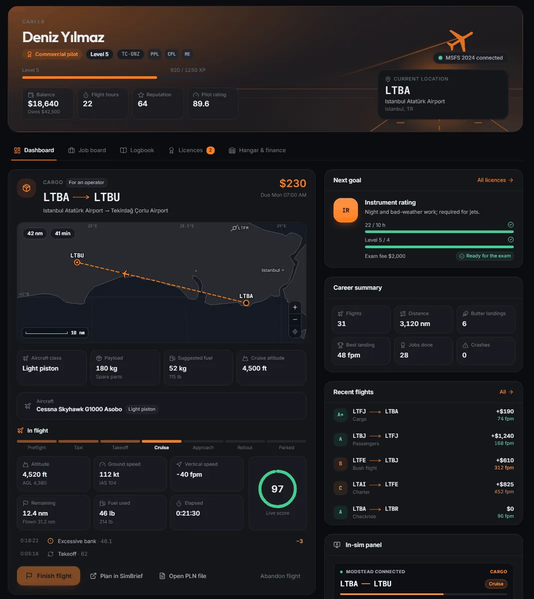
- Price
- Free, GPL-3.0
- Sims
- MSFS 2024 and MSFS 2020
- Online
- No account, no server, works offline
- Sim link
- SimConnect over local TCP, no DLL
01 / Features
From student pilot to airline captain
A job board, licences, money and a logbook, with every flight set up in the sim for you and tracked while you fly.
- 01
Job board at your airport
Cargo, passengers, charter, aircraft ferry, bush flights, air ambulance and airline flights, filtered by your licences and reputation, on a route map. Listings refresh every 4 hours.
- 02
Automatic flight setup
Starts the sim if needed, picks a parking spot from the sim's own airport data (or puts you on the runway with the engines running), writes the flight and route plan, moves the aircraft and loads the payload. Tested in the real MSFS 2024.
- 03
Flight tracking and score
Flight phases, landing rate and G at touchdown, bounces, overspeed, stall and flap warnings, and cheat detection: slew, teleport and refuelling in the air.
- 04
Licences and checkrides
SPL, PPL and CPL, then multi-engine, instrument, helicopter, jet, ATPL and narrowbody and widebody type ratings. Each needs hours, a level and a fee, then a checkride.
- 05
Two ways to earn
Fly for an operator (their aircraft, fuel and fees; you earn an hourly wage) or, after the CPL, on your own account: you pay rent, fuel and landing fees and keep the profit.
- 06
Logbook, hangar and finance
Every flight with its flown track, landing data, deductions and pay. Buy and sell aircraft, maintenance and wear, and a loan with no time-based interest.
- 07
In-sim toolbar panel
Route, phase, remaining distance, ETA, score and pay in the MSFS 2020 and 2024 toolbar, also in full screen and VR.
- 08
Career page in the main menu
A Modstead Career tile next to the sim's own tiles in MSFS 2024: take a job, pick an aircraft (with real photos) and start the flight without leaving the sim.
- 09
Free and local
No subscription, no account and no online server. Career data is plain JSON on your PC, and SimBrief is one click away.
It runs inside the Modstead app
The career mode is part of Modstead, a free mod manager for Windows, not a separate add-on: its data, rules and sim connection live in the app, and the career itself needs nothing inside the sim. The toolbar panel and the main menu tile are optional packages that show what the app serves on 127.0.0.1. With the app closed, flights are not tracked, the panel shows "Modstead not connected" and the tile does not appear.
02 / Realism
Realism without the grind
Simmers dislike hidden, zero-tolerance penalties, grind and real-time lockouts. So the realism here follows real procedures and regulations, but rules apply with short tolerances, and nothing makes you wait in real time.
- Score
- Only drops for safety
- Procedures
- Only add bonus XP (all bonuses together at most +20%)
- Sim data
- What the sim cannot read is not counted
- Appeals
- Rule deductions, within 7 days
- Approach
Stabilised approach and touchdown
A stabilised-approach gate at 1,000 ft (instrument conditions) or 500 ft (visual) checks sink rate, bank, gear and speed. Landing from an unstable approach costs 5 points; a go-around costs nothing and earns a bonus. The touchdown is measured against the threshold, the touchdown zone and the centreline, with tail strike and maximum takeoff and landing weight limits.
- Dispatch
Dispatch release
Fuel per the EASA policy (taxi, trip, contingency, alternate and final reserve), with an alternate airport chosen under IFR. Zero-fuel, takeoff and landing weights against the limits, and a runway check that grows with density altitude and a wet runway.
- Weather
Real METAR weather
Observations from aviationweather.gov for the job board and the active job. A job to an IFR or LIFR destination needs a current instrument rating, and rated pilots earn a bad-weather bonus (IFR 15%, LIFR 25%). Offline, the weather is simply unknown.
- Cabin
Passenger comfort and sensitive cargo
Comfort sets the tip, not the score: 90+ earns 8% of the pay. Fragile, live and medical cargo is damaged by high G and hard landings, and the claim comes out of the pay. Perishable cargo has a tight deadline; dangerous goods need a commercial licence.
- Records
Pilot records
Passenger, night and instrument currency, a medical certificate whose validity depends on your licence and age, and flight duty limits. Resting is a button with a hotel bill away from base, not real-time waiting. The difficulty decides which rules apply.
- Hangar
Maintenance programmes and insurance
Inspections by hours or months for each aircraft class, from 100-hour inspections to A- and C-checks and engine overhauls; an aircraft past its inspection cannot fly. Hull insurance is optional: a premium per flight hour and a 5% deductible.
- Costs
Regional fuel prices and fees
Fuel prices by region that change from week to week, navigation charges with the Eurocontrol formula and handling fees per passenger and per kilogram of cargo. They go into own-account quotes; on operator jobs the operator pays.
- Aerial work
Tours, skydiving, survey, search and rescue
With a commercial licence: sightseeing tours, skydiving loads, aerial survey and search and rescue. The objectives go into the flight plan as waypoints, and pay follows the objectives you complete, so a partly done job still pays partly.
- Fair play
Achievements and appeals
24 achievements computed from your career. A deduction caused by a sim or add-on bug can be removed in the flight details within 7 days; score, grade, XP and reputation are recalculated, and money never changes.
In the app
App preview with sample data, Turkish interface. Select an image for the whole screen.


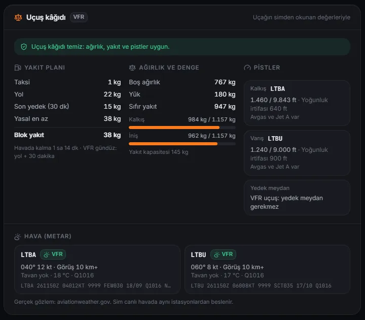
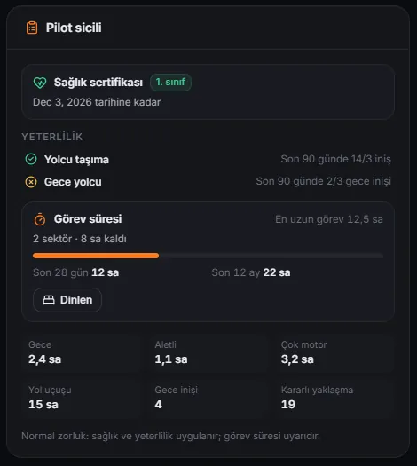
In the MSFS 2024 main menu page
The in-sim page in a browser test harness with sample data, Turkish interface; not a capture from the sim.

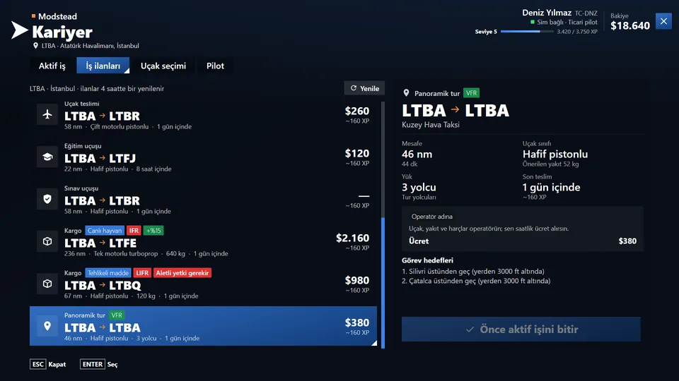
The thresholds, tolerances and formulas behind every item: career mode documentation, Realism.
03 / Screenshots
In the sim and in the app
Real screenshots. Each group says where its images come from. Select an image to open it at full size.
MSFS 2024 main menu
Captured inside MSFS 2024 (1.9.21.0) with a sample career and the Turkish interface.
A Modstead Career tile next to the sim's own tiles opens a full-screen page with four tabs: the active job (a route strip with runways and elevations, payload, fuel, deadline, aircraft, a start at the gate or on the runway, and the preparation checks), the job board, aircraft choice with photos and the pilot profile. Keys work as on the sim's own pages, and the sim's key bar shows the page's own shortcuts. Install it from Career → Dashboard: the package is built from your own sim's menu component and removed by itself if a sim update changes that component.
- ESC close or back
- Space select
- Q E switch tab
- arrow keys and controller

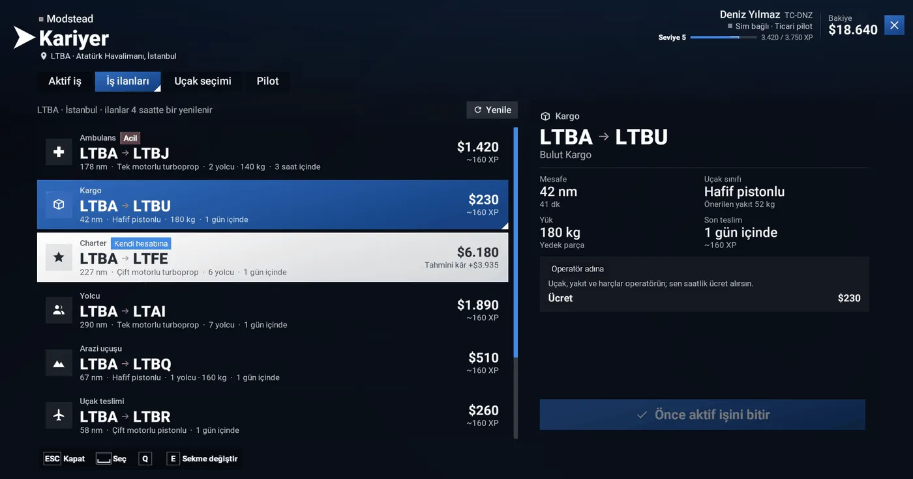

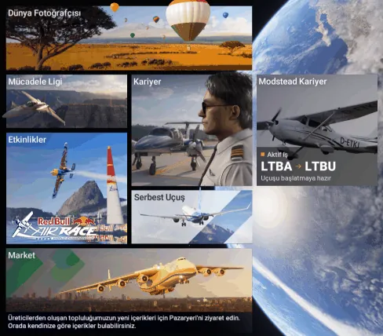

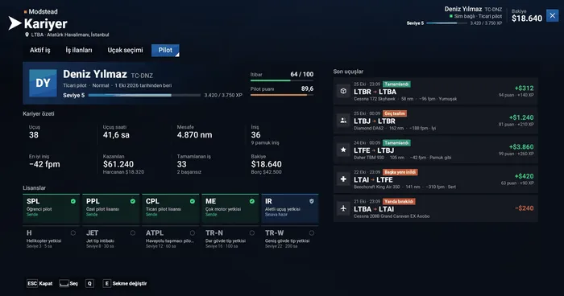
In-sim toolbar panel
Browser preview of the panel's own code inside the sim's panel frame with simulated values, not a capture from the sim.

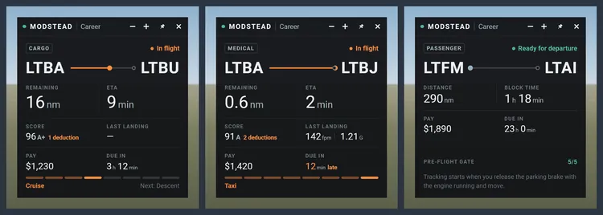
The app
Preview mode with sample data. The images below are cropped to the part each caption describes; select one for the whole screen.

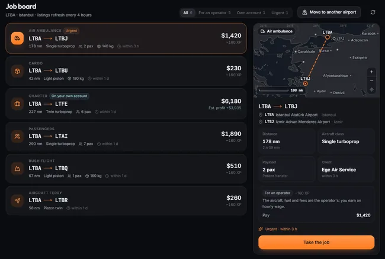

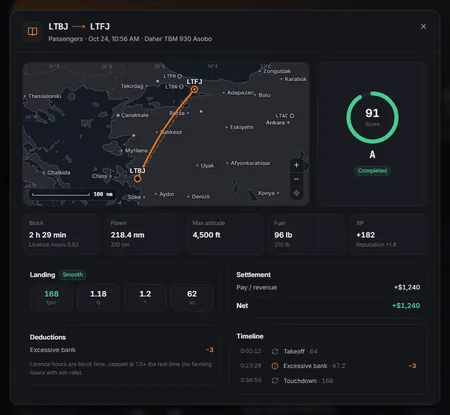

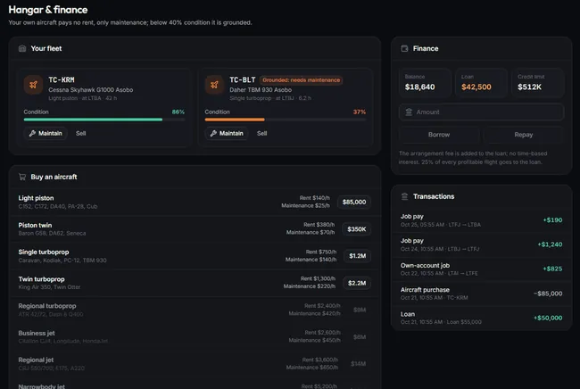

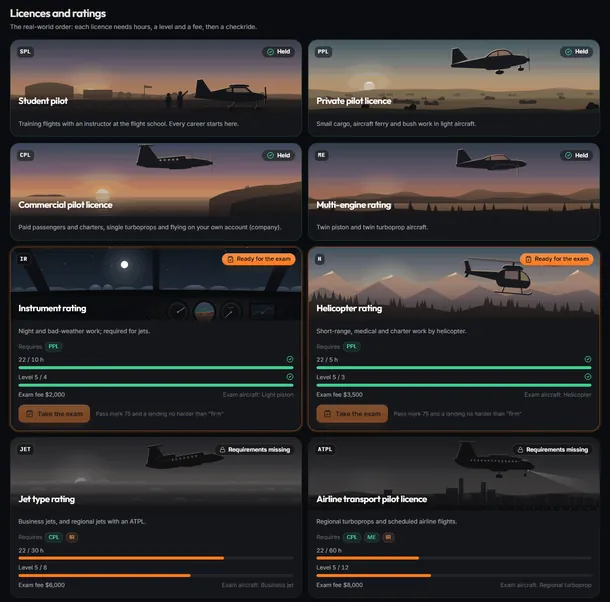

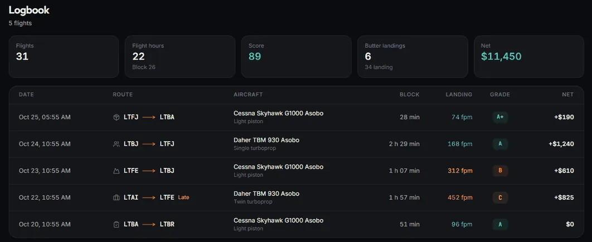
04 / How it works
How a career flight works
Pick a job and the app does the setup in the sim. Tracking arms itself when the pre-flight checks turn green.
Pick a job
Choose a job from the board at your current airport, in the app or in the MSFS 2024 main menu.
The app sets up the flight
It starts MSFS if needed, places your aircraft at a suitable stand, loads the payload and writes a route plan. If the sim does not load the flight by itself, open a free flight at the departure airport and press Move to parking.
Pass the pre-flight checks
Sim connected, at the departure airport, right aircraft, slew off. Start the engines and tracking starts by itself.
Fly and land
The app reads the sim about 10 times a second over SimConnect, scores the flight and writes it to your logbook with pay, XP and reputation.
The app speaks the SimConnect network protocol itself over local TCP, so no SimConnect.dll is shipped and nothing is injected into the sim. MSFS 2024 opens this port by default; MSFS 2020 needs a local IPv4 entry in SimConnect.xml (how).

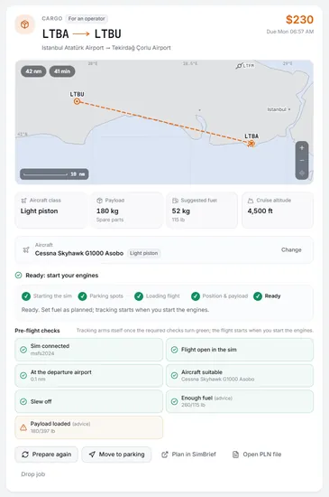
05 / Rules and scoring
Transparent rules: every deduction has a cap
Every rule, fee and penalty is documented. The score sets XP and reputation, not money, so a wrong deduction never costs you cash.
| Rule | Deduction | Cap |
|---|---|---|
| Overspeed | 5 | 15 |
| Stall warning (above 150 ft AGL) | 5 | 15 |
| Flap speed limit | 3 | 9 |
| Bank > 45° (jets 35°) | 3 | 9 |
| Pitch > 25° / < −15° | 3 | 9 |
| G > 2.5 or < −1 | 5 | 10 |
| > 265 kt below 10,000 ft (turbine) | 5 | 10 |
| Bank > 30° close to the ground (below 1,000 ft) | 3 | 6 |
| Taxi > 30 kt off the runway for more than 3 s | 2 | 6 |
| Bounce | 4 | 12 |
| Landing below final reserve (piston 45, turbine 30, helicopter 20 min) | 5 | 5 |
| Landing from an unstable approach | 5 | 5 |
| Tail strike (jet airliners: regional 10.5°, narrowbody 11°, widebody 10°) | 10 | 10 |
| Touchdown before the threshold | 8 | 8 |
| Long landing (beyond the touchdown zone + 150 m) | 3 | 3 |
| Off the centreline (half the runway width − 4 m) | 2 | 2 |
| Maximum takeoff / landing weight exceeded | 5 + 5 | 5 + 5 |
| Cloud or low visibility for more than 30 s without a current instrument rating | 10 | 10 |
| Unpressurised cabin above 12,500 ft for more than 30 min, or above 15,000 ft (FAA 91.211) | 5 | 10 |
| Landing rateScaled by class. Light aircraft: < 200 fpm 0 · 200–300: 3 · 300–400: 8 · 400–500: 15 · ≥ 500: 25 | ||
| Landing G and bankG > 1.5: 5 · > 2.0: 10; bank > 6°: 5 · > 10°: 10 | ||
- Score drives XP and reputation, not moneyMoney only follows real events: late delivery, damage, fuel and rent.
- Grades
- A+ ≥ 95
- A ≥ 88
- B ≥ 78
- C ≥ 65
- D ≥ 50
- F
- Void flightsSlew in the air, a teleport or phase skip, refuelling in the air, a flight that starts in the air, or a crash: score 0, no pay, and −15 reputation for a crash.
- AppealsA rule deduction can be removed within 7 days if a sim or add-on bug caused it. Money does not change; void flights cannot be appealed.
- CheckridesArrive, score at least 75 (Easy 65, Realistic 85) and land no harder than "firm". The fee is paid even if you fail.
- Fair sim rateLicence hours are block time, capped at 1.5× the real time, so sim rate cannot farm hours.
| Licence | Requires | Hours | Level | Fee | Unlocks |
|---|---|---|---|---|---|
| SPL Student pilot | — | — | 1 | — | training flights |
| PPL Private pilot licence | SPL | 3 | 2 | $800 | cargo, aircraft ferry, bush |
| CPL Commercial pilot licence | PPL | 15 | 5 | $2,500 | passengers, charter, air ambulance, single turboprops, own-account jobs, aircraft ownership, loans |
| ME Multi-engine rating | PPL | 8 | 3 | $1,500 | twins |
| IR Instrument rating | PPL | 10 | 4 | $2,000 | required for jets |
| H Helicopter rating | PPL | 5 | 3 | $3,500 | helicopters |
| JET Jet type rating | CPL, IR | 30 | 8 | $6,000 | business jets |
| ATPL Airline transport pilot licence | CPL, ME, IR | 60 | 12 | $8,000 | scheduled airline flights |
| TR-N Narrowbody type rating | ATPL, JET | 100 | 16 | $15,000 | A320, 737 |
| TR-W Widebody type rating | TR-N | 200 | 22 | $30,000 | 787, 777, A350 |
Full formulas for pay, XP, levels, reputation, damage and loans: career mode documentation, Rules and formulas.
06 / Compared
Compared with OnAir, NeoFly and FSEconomy
It covers similar ground (jobs, an economy, licences and a logbook) but is free, open source and fully local: no subscription, no account and no online server, with every formula documented. It has no shared online world or multiplayer economy.
| Product | Strength | Trade-offs |
|---|---|---|
| OnAir Company | Deepest economy; formulas published in its manual; freelance → company progression | Subscription, must stay online, depends on its servers |
| NeoFly 4 | 18 mission types, no deadlines, passengers and cargo together | High running costs, demanding qualification flights |
| FSEconomy | A shared, persistent world; the 30/48 rule (at most 30 sim hours in 48 hours) | Dated interface |
| This career mode | Free and local; every formula documented; sets up the flight in the sim for you | No shared online world or multiplayer economy; early development; Windows only |
What it took from them
- A pre-flight gate (OnAir): once the required checks are green, tracking arms itself.
- Published formulas (OnAir manual, A Pilot's Life guide): every rule is shown in the app and in the docs.
- Score drives XP and reputation, not money (OnAir).
- A protected first stage: jobs for an operator have no costs; own-account jobs open after the CPL.
- A short-flight bonus, so half-hour sessions pay too.
- A pilot rating (A Pilot's Life): halfway between the last 10 flights and all flights.
- Licences through checkrides (A Pilot's Life, Air Hauler 2, MSFS 2024).
- Fair sim rate, in the spirit of FSEconomy and OnAir.
Full research table, including A Pilot's Life 2, Air Hauler 2, Volanta and smartCARS and the built-in MSFS 2024 career.
07 / Download
Download for Windows
The career mode comes with the Modstead app. Install it on Windows 10 or 11 (x64), or build it from source.
Early development release. Expect rough edges; the rules, the SimConnect protocol and the job flow are covered by automated tests, but not everything has been flown with yet.
- Built in the openThe installer is built on GitHub Actions from the public source code.
- Check the downloadEach release has a
SHA256SUMS.txt. In PowerShell, runGet-FileHash .\Modstead-setup-x64.exe -Algorithm SHA256and compare the hash with the one in that file. - SmartScreen warningThe installer is not code-signed, so Windows SmartScreen may show "Unknown publisher". Choose More info, then Run anyway.
After installing
- Open the app, go to MSFS → Career and register a pilot: name, callsign, home base, difficulty and starting rank.
- Optional: install the toolbar panel and the main menu tile from Career → Dashboard, with the sims closed.
- MSFS 2020 only: add a local IPv4 entry to
SimConnect.xml(see the FAQ).
Build from source
- Node.js 22+
- Rust 1.85+ (MSVC)
- Microsoft Edge WebView2
git clone https://github.com/azorkai/modstead.git
cd modstead
# exact versions, install scripts disabled
npm install
# desktop app (development), or an NSIS installer
npm run app:dev
npm run app:buildJust looking? npm run dev opens the interface in the browser with sample data; add ?view=game:msfs:career to the address for the career page.
Modstead is free and open source; if it is useful to you, you can support its development: Buy me a coffee.
08 / FAQ
Questions and answers
Is this career mode free?
Yes. It is part of Modstead, which is free and open source under the GPL-3.0 licence. There is no subscription and no account.
How do I install it?
Download the Windows 10/11 (x64) installer from GitHub Releases, or build the app from source. The career mode is part of the Modstead app: open MSFS, then Career, and register a pilot. See Download.
Does it work with MSFS 2020?
Yes, with one setup step. MSFS 2024 opens a local IPv4 SimConnect port by default; MSFS 2020 only opens a named pipe. Add a block like the one MSFS 2024 writes to SimConnect.xml in the sim's settings folder (the folder that holds UserCfg.opt), next to the existing <SimConnect.Comm> entries, then restart the sim:
<SimConnect.Comm>
<Descr>Static IP4 port</Descr>
<Protocol>IPv4</Protocol>
<Scope>local</Scope>
<Port>500</Port>
</SimConnect.Comm>Modstead reads the port from this file and never edits it for you.
Does it replace the built-in MSFS 2024 career?
No, it runs next to it. It uses free flights in the sim and keeps its own career, licences and logbook in Modstead.
Is it an alternative to OnAir, NeoFly or FSEconomy?
It covers similar ground (jobs, an economy, licences and a logbook) with a different focus: everything is local and documented, and there is no subscription or server. It has no shared online world or multiplayer economy. See the comparison.
How realistic is it?
It follows real procedures and rules without the grind: a stabilised approach gate, the touchdown point against the runway, a dispatch release with an EASA fuel policy, real METAR weather, pilot currency, medical and flight duty, and maintenance programmes. The score only drops for safety, procedures only add bonus XP, nothing the sim cannot read is counted, and a rule deduction can be appealed within 7 days. Resting is a button, not real-time waiting. See Realism.
Does it need an internet connection?
No. Jobs are generated locally and career data stays on your PC. Real METAR weather and opening SimBrief use the internet; offline, the weather is simply unknown.
Does it install anything into the sim?
Not for the career itself. The toolbar panel (MSFS 2020 and 2024) and the main menu tile (MSFS 2024) are optional and are installed like any other mod, into the Community folder, from Career → Dashboard. Both only show what Modstead serves on 127.0.0.1; with Modstead closed the panel says so and the tile does not appear.
Can I use the career without leaving the sim?
In MSFS 2024, yes, for the everyday loop: the main menu page lets you take a job, choose an aircraft and start the flight, and the toolbar panel follows the flight. Modstead still has to be running on the PC. Buying aircraft, licences, loans and the full logbook are in the Modstead app.
Does it work with the Modstead app closed?
No. The career's data, rules and sim connection live in the app. While it is closed, flights are not tracked, the toolbar panel says "Modstead not connected" and the main menu tile does not appear.
Which aircraft can I fly?
Any aircraft installed in the sim. Modstead classifies it from the sim's values (or its name) into a class such as light piston, single turboprop or narrowbody jet; you can change the class by hand. For aircraft with their own EFB (PMDG, Fenix, iniBuilds, FBW) Modstead does not write the payload and shows the planned values instead.